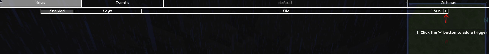
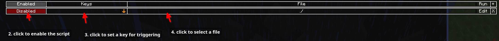
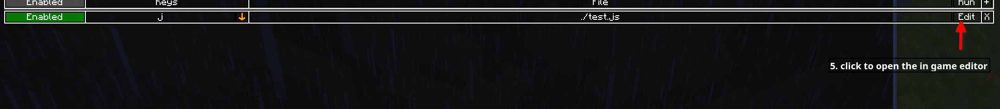
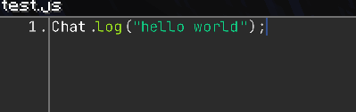
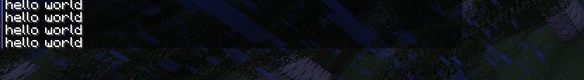
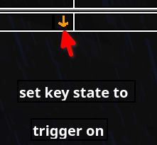

Tutorial
1. Press 'K' to open the jsmacros gui
(this can be changed in the vanilla controls setting)
2-4. create a macro

5. Editing

6. Write and save your script
scripts are written in js (or another guest language provided by one of the extensions). Libraries are basically just objects that are loaded into the script above the first line, so you can just call them without any importing.

extra
0
